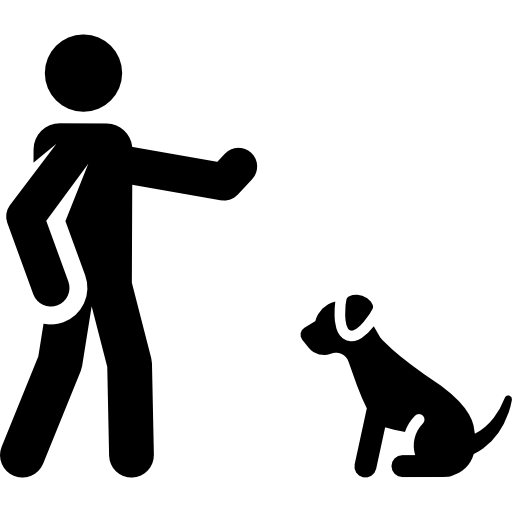

A ESCOLA BRUNO LEITE SERVE PARA FAMILIAS QUE BUSCAM SOLUÇÕES PARA:
 CACHORROS QUE LATEM DEMAIS
CACHORROS QUE LATEM DEMAIS
 CACHORROS QUE DESTROEM A CASA
CACHORROS QUE DESTROEM A CASA
CACHORROS QUE MORDEM
CACHORROS QUE PUXAM NO PASSEIO
CACHORROS QUE PULAM
CACHORROS AGRESSIVOS / REATIVOS
CACHORROS QUE FAZEM XIXI EM TUDO
 TER CACHORROS AINDA MAIS FELIZES
TER CACHORROS AINDA MAIS FELIZES
SE COMUNICAR MELHOR COM SEU CACHORRO

E MUITOS OUTROS PROBLEMAS DE COMPORTAMENTO...